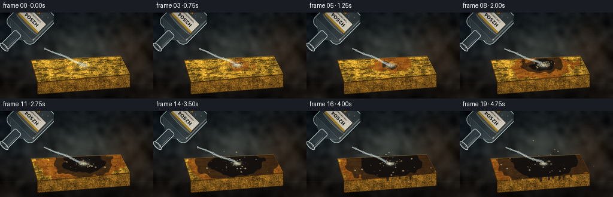
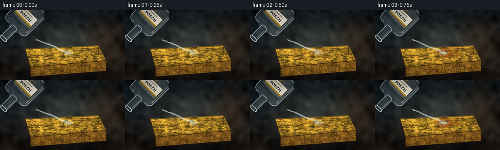
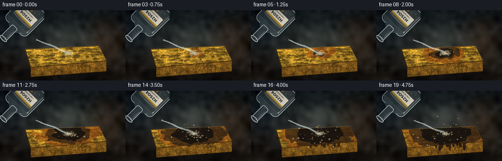
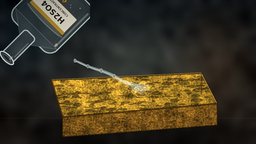
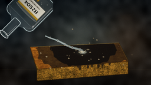
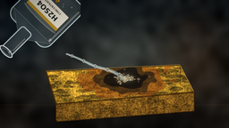
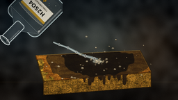

CODING AGENTS AS PIXEL WORLD MODELS
traex/DeepSeek-V4.1-Flash · phygen_155
点击播放 · 原生 RGB 像素
逐轮保存的候选
回放视频、检查图与代码变化。
每份候选均可单独播放。实际图片检查记录在下方工具轨迹中。
候选 01播放与检查图
点击播放 · 原生 RGB 像素

展开代码变化
--- 上一保存版本
+++ 本次保存版本
@@ -0,0 +1,549 @@
+from pathlib import Path
+
+import numpy as np
+from PIL import Image, ImageDraw, ImageFilter, ImageFont
+from scipy.ndimage import gaussian_filter
+
+import artifact_io
+
+
+CASE_DIR = Path(__file__).resolve().parent
+W, H = 256, 144
+S = 4
+RW, RH = W * S, H * S
+N, FPS = 20, 4.0
+
+TOP_POLY = [(205, 320), (805, 292), (868, 414), (250, 468)]
+RIGHT_POLY = [(805, 292), (868, 414), (868, 500), (805, 378)]
+FRONT_POLY = [(250, 468), (868, 414), (868, 500), (250, 548)]
+IMPACT = np.array([560.0, 352.0])
+STREAM_START = np.array([300.0, 242.0])
+
+
+def smoothstep(a, b, x):
+ u = np.clip((x - a) / (b - a), 0.0, 1.0)
+ return u * u * (3.0 - 2.0 * u)
+
+
+def polygon_mask(poly):
+ mask = Image.new("L", (RW, RH), 0)
+ ImageDraw.Draw(mask).polygon(poly, fill=255)
+ return np.asarray(mask, dtype=np.float32) / 255.0
+
+
+def alpha_composite(base, layer):
+ out = Image.alpha_composite(base.convert("RGBA"), layer.convert("RGBA"))
+ return out.convert("RGB")
+
+
+def load_font(size, bold=False):
+ names = (
+ ["/usr/share/fonts/truetype/dejavu/DejaVuSans-Bold.ttf"]
+ if bold
+ else ["/usr/share/fonts/truetype/dejavu/DejaVuSans.ttf"]
+ )
+ for name in names:
+ try:
+ return ImageFont.truetype(name, size)
+ except OSError:
+ pass
+ return ImageFont.load_default()
+
+
+def make_background(rng):
+ yy, xx = np.mgrid[0:RH, 0:RW].astype(np.float32)
+ y = yy / (RH - 1)
+ x = xx / (RW - 1)
+
+ top = np.array([18.0, 23.0, 26.0], dtype=np.float32)
+ bottom = np.array([37.0, 31.0, 25.0], dtype=np.float32)
+ bg = top[None, None, :] * (1.0 - y[..., None])
+ bg += bottom[None, None, :] * y[..., None]
+
+ key = np.exp(-(((x - 0.53) / 0.34) ** 2 + ((y - 0.47) / 0.47) ** 2) * 2.2)
+ warm = np.exp(-(((x - 0.86) / 0.23) ** 2 + ((y - 0.45) / 0.55) ** 2) * 2.0)
+ cool = np.exp(-(((x - 0.08) / 0.19) ** 2 + ((y - 0.30) / 0.42) ** 2) * 2.0)
+ bg += key[..., None] * np.array([31.0, 34.0, 31.0], dtype=np.float32)
+ bg += warm[..., None] * np.array([20.0, 10.0, 2.0], dtype=np.float32)
+ bg += cool[..., None] * np.array([1.0, 7.0, 11.0], dtype=np.float32)
+
+ broad = gaussian_filter(rng.normal(0.0, 1.0, (RH, RW)), 18.0)
+ broad /= max(1e-6, broad.std())
+ fine = gaussian_filter(rng.normal(0.0, 1.0, (RH, RW)), 2.0)
+ bg += broad[..., None] * 5.0 + fine[..., None] * 1.4
+
+ # Soft out-of-focus highlights make the dark laboratory surface feel photographic.
+ bokeh = Image.new("RGBA", (RW, RH), (0, 0, 0, 0))
+ draw = ImageDraw.Draw(bokeh)
+ for cx, cy, rx, ry, col, alpha in [
+ (93, 104, 44, 25, (63, 94, 104), 32),
+ (850, 119, 65, 28, (130, 79, 43), 28),
+ (744, 226, 30, 18, (122, 103, 61), 22),
+ (160, 462, 60, 20, (83, 74, 51), 20),
+ ]:
+ draw.ellipse((cx - rx, cy - ry, cx + rx, cy + ry), fill=col + (alpha,))
+ bokeh = bokeh.filter(ImageFilter.GaussianBlur(20))
+ bg = np.asarray(alpha_composite(Image.fromarray(np.uint8(np.clip(bg, 0, 255))), bokeh))
+
+ # A faint bench seam and a downward light falloff.
+ seam = np.exp(-((yy - 472.0) / 3.2) ** 2)
+ bg = bg.astype(np.float32)
+ bg += seam[..., None] * np.array([9.0, 7.0, 4.0], dtype=np.float32)
+ return bg
+
+
+def add_sponge(base, rng):
+ top_mask = polygon_mask(TOP_POLY)
+ front_mask = polygon_mask(FRONT_POLY)
+ right_mask = polygon_mask(RIGHT_POLY)
+
+ # Contact shadow under the block.
+ shadow = Image.new("RGBA", (RW, RH), (0, 0, 0, 0))
+ draw = ImageDraw.Draw(shadow)
+ draw.ellipse((105, 455, 965, 590), fill=(0, 0, 0, 160))
+ draw.ellipse((185, 475, 890, 566), fill=(0, 0, 0, 120))
+ shadow = shadow.filter(ImageFilter.GaussianBlur(28))
+ base = np.asarray(alpha_composite(Image.fromarray(np.uint8(np.clip(base, 0, 255))), shadow)).astype(np.float32)
+
+ yy, xx = np.mgrid[0:RH, 0:RW].astype(np.float32)
+ fine = gaussian_filter(rng.normal(0.0, 1.0, (RH, RW)), 1.5)
+ blotch = gaussian_filter(rng.normal(0.0, 1.0, (RH, RW)), 12.0)
+ fine /= max(1e-6, fine.std())
+ blotch /= max(1e-6, blotch.std())
+
+ # Right and front faces establish the sponge as a solid porous block.
+ side_shade = 0.80 + 0.12 * fine + 0.06 * blotch
+ right_rgb = np.stack(
+ [
+ 126.0 * side_shade,
+ 92.0 * side_shade,
+ 30.0 * side_shade,
+ ],
+ axis=-1,
+ )
+ front_shade = 0.82 + 0.14 * fine + 0.08 * blotch
+ front_rgb = np.stack(
+ [
+ 161.0 * front_shade,
+ 112.0 * front_shade,
+ 36.0 * front_shade,
+ ],
+ axis=-1,
+ )
+ top_light = 1.03 - 0.22 * (xx / RW) + 0.08 * (1.0 - yy / RH)
+ top_shade = top_light * (0.88 + 0.13 * fine + 0.13 * blotch)
+ top_rgb = np.stack(
+ [
+ 213.0 * top_shade,
+ 163.0 * top_shade,
+ 49.0 * top_shade,
+ ],
+ axis=-1,
+ )
+
+ for mask, rgb in [(right_mask, right_rgb), (front_mask, front_rgb), (top_mask, top_rgb)]:
+ m = mask[..., None]
+ base = base * (1.0 - m) + rgb * m
+
+ # Front-face striations and pores.
+ face_layer = Image.new("RGBA", (RW, RH), (0, 0, 0, 0))
+ draw = ImageDraw.Draw(face_layer)
+ for _ in range(90):
+ x = int(rng.uniform(250, 870))
+ y0 = int(rng.uniform(438, 492))
+ length = int(rng.uniform(18, 76))
+ col = (76 + int(rng.integers(0, 45)), 48 + int(rng.integers(0, 30)), 16, int(rng.integers(35, 105)))
+ draw.line((x, y0, x + int(rng.uniform(-8, 8)), y0 + length), fill=col, width=int(rng.integers(2, 7)))
+ for _ in range(65):
+ x = int(rng.uniform(260, 860))
+ y = int(rng.uniform(438, 540))
+ rx = int(rng.uniform(3, 14))
+ ry = int(rng.uniform(2, 7))
+ draw.ellipse((x - rx, y - ry, x + rx, y + ry), fill=(54, 34, 11, int(rng.integers(80, 165))))
+ draw.arc((x - rx, y - ry, x + rx, y + ry), 190, 340, fill=(225, 177, 69, 70), width=2)
+ face_layer = face_layer.filter(ImageFilter.GaussianBlur(0.55))
+ face_alpha = np.asarray(face_layer, dtype=np.float32) / 255.0
+ face_mask = np.maximum(front_mask, right_mask)[..., None]
+ base = base * (1.0 - face_alpha[..., 3:4] * face_mask) + face_alpha[..., :3] * 255.0 * face_alpha[..., 3:4] * face_mask
+
+ # Pores on the top face, with a dark recess and a warm lower rim.
+ pores = Image.new("RGBA", (RW, RH), (0, 0, 0, 0))
+ draw = ImageDraw.Draw(pores)
+ placed = 0
+ while placed < 145:
+ x = int(rng.uniform(220, 850))
+ y = int(rng.uniform(305, 458))
+ if top_mask[y, x] < 0.5:
+ continue
+ rx = int(rng.uniform(6, 25))
+ ry = int(rng.uniform(2, 9))
+ box = (x - rx, y - ry, x + rx, y + ry)
+ draw.ellipse(box, fill=(61, 42, 14, int(rng.integers(155, 225))))
+ draw.ellipse((x - rx + 3, y - ry + 2, x + rx - 2, y + ry - 1), fill=(32, 25, 13, int(rng.integers(85, 145))))
+ draw.arc((x - rx, y - ry, x + rx, y + ry), 15, 145, fill=(237, 190, 71, int(rng.integers(35, 90))), width=2)
+ placed += 1
+ pores = pores.filter(ImageFilter.GaussianBlur(0.45))
+ pa = np.asarray(pores, dtype=np.float32) / 255.0
+ pm = top_mask[..., None]
+ base = base * (1.0 - pa[..., 3:4] * pm) + pa[..., :3] * 255.0 * pa[..., 3:4] * pm
+
+ # Fine porous ridges.
+ ridge = Image.new("RGBA", (RW, RH), (0, 0, 0, 0))
+ draw = ImageDraw.Draw(ridge)
+ for _ in range(120):
+ x = rng.uniform(225, 840)
+ y = rng.uniform(305, 460)
+ if top_mask[int(y), int(x)] < 0.5:
+ continue
+ length = rng.uniform(8, 40)
+ angle = rng.uniform(-0.35, 0.35)
+ x2 = x + length * np.cos(angle)
+ y2 = y + length * np.sin(angle) * 0.35
+ draw.line(
+ (x, y, x2, y2),
+ fill=(119 + int(rng.integers(0, 35)), 84, 22, int(rng.integers(35, 85))),
+ width=int(rng.integers(1, 4)),
+ )
+ ridge = ridge.filter(ImageFilter.GaussianBlur(0.7))
+ ra = np.asarray(ridge, dtype=np.float32) / 255.0
+ base = base * (1.0 - ra[..., 3:4] * pm) + ra[..., :3] * 255.0 * ra[..., 3:4] * pm
+
+ # Crisp bevels and soft contact shading.
+ edge = Image.new("RGBA", (RW, RH), (0, 0, 0, 0))
+ draw = ImageDraw.Draw(edge)
+ draw.line(TOP_POLY + [TOP_POLY[0]], fill=(61, 39, 10, 210), width=7, joint="curve")
+ draw.line([(207, 318), (803, 290), (866, 412)], fill=(247, 199, 81, 135), width=3, joint="curve")
+ draw.line([(250, 468), (868, 414)], fill=(63, 37, 8, 230), width=7)
+ draw.line([(805, 292), (805, 378)], fill=(73, 45, 10, 165), width=4)
+ draw.line(FRONT_POLY + [FRONT_POLY[0]], fill=(53, 31, 8, 180), width=4, joint="curve")
+ edge = edge.filter(ImageFilter.GaussianBlur(0.7))
+ return alpha_composite(Image.fromarray(np.uint8(np.clip(base, 0, 255))), edge), top_mask, front_mask
+
+
+def add_reaction(base, top_mask, front_mask, t, rng):
+ yy, xx = np.mgrid[0:RH, 0:RW].astype(np.float32)
+ progress = smoothstep(0.18, 4.55, t)
+ radius = 5.0 + 198.0 * progress
+ char_noise = gaussian_filter(rng.normal(0.0, 1.0, (RH, RW)), 13.0)
+ char_noise /= max(1e-6, char_noise.std())
+ fine = gaussian_filter(rng.normal(0.0, 1.0, (RH, RW)), 2.2)
+ fine /= max(1e-6, fine.std())
+
+ dx = (xx - IMPACT[0]) / 1.58
+ dy = (yy - IMPACT[1]) / 0.70
+ d = np.sqrt(dx * dx + dy * dy)
+
+ wet = ((d < radius + 44.0 + 16.0 * char_noise) & (top_mask > 0.5)).astype(np.float32)
+ char = ((d < radius + 10.0 * char_noise) & (top_mask > 0.5)).astype(np.float32)
+ core = ((d < radius * 0.67 + 7.0 * char_noise) & (top_mask > 0.5)).astype(np.float32)
+ ring = np.clip(wet - char, 0.0, 1.0)
+
+ wet = gaussian_filter(wet, 1.2)[..., None]
+ char = gaussian_filter(char, 1.0)[..., None]
+ core = gaussian_filter(core, 1.4)[..., None]
+ ring = gaussian_filter(ring, 1.2)[..., None]
+ reaction_visibility = smoothstep(0.30, 0.95, t)
+
+ wet_col = np.array([104.0, 55.0, 18.0], dtype=np.float32)
+ char_col = np.array([48.0, 31.0, 19.0], dtype=np.float32)
+ core_col = np.array([19.0, 16.0, 14.0], dtype=np.float32)
+ ring_col = np.array([171.0, 78.0, 20.0], dtype=np.float32)
+
+ base = base * (1.0 - 0.48 * wet * reaction_visibility) + wet_col * 0.48 * wet * reaction_visibility
+ base = base * (1.0 - 0.82 * char * reaction_visibility) + char_col * 0.82 * char * reaction_visibility
+ base = base * (1.0 - 0.90 * core * reaction_visibility) + core_col * 0.90 * core * reaction_visibility
+ base = base * (1.0 - 0.34 * ring * reaction_visibility) + ring_col * 0.34 * ring * reaction_visibility
+
+ # Wet acid sheen at the impact point.
+ sheen = np.exp(-(((xx - IMPACT[0]) / 44.0) ** 2 + ((yy - IMPACT[1]) / 23.0) ** 2) * 1.8)
+ sheen *= (0.25 + 0.75 * (1.0 - progress)) * top_mask
+ base += sheen[..., None] * np.array([95.0, 106.0, 93.0], dtype=np.float32)
+
+ # Soot flecks around the expanding crater.
+ flecks = Image.new("RGBA", (RW, RH), (0, 0, 0, 0))
+ draw = ImageDraw.Draw(flecks)
+ for _ in range(int(35 + 85 * progress)):
+ ang = rng.uniform(0.0, 2.0 * np.pi)
+ dist = radius * rng.uniform(0.85, 1.65)
+ x = IMPACT[0] + np.cos(ang) * dist * 1.58
+ y = IMPACT[1] + np.sin(ang) * dist * 0.70
+ if not (0 <= int(y) < RH and 0 <= int(x) < RW) or top_mask[int(y), int(x)] < 0.5:
+ continue
+ r = rng.uniform(1.0, 4.5)
+ draw.ellipse((x - r, y - r, x + r, y + r), fill=(20, 16, 13, int(rng.integers(40, 130))))
+ base = np.asarray(alpha_composite(Image.fromarray(np.uint8(np.clip(base, 0, 255))), flecks)).astype(np.float32)
+
+ # Charred liquid runs down the front face in the latter half.
+ if t > 2.1:
+ drip = Image.new("RGBA", (RW, RH), (0, 0, 0, 0))
+ draw = ImageDraw.Draw(drip)
+ spread = smoothstep(2.1, 4.8, t)
+ for i in range(18):
+ x = 480 + i * 15 + 8 * np.sin(i * 2.3)
+ top_y = 436 + (x - 250) * -0.087
+ length = (16 + (i % 5) * 8) * spread * rng.uniform(0.7, 1.35)
+ width = rng.uniform(4, 10)
+ draw.rounded_rectangle(
+ (x - width, top_y, x + width, top_y + length),
+ radius=width,
+ fill=(38, 27, 19, int(110 + 85 * spread)),
+ )
+ draw.ellipse(
+ (x - width * 0.8, top_y + length - width, x + width * 0.8, top_y + length + width),
+ fill=(31, 23, 18, int(120 + 80 * spread)),
+ )
+ dm = front_mask[..., None]
+ da = np.asarray(drip, dtype=np.float32) / 255.0
+ base = base * (1.0 - da[..., 3:4] * dm) + da[..., :3] * 255.0 * da[..., 3:4] * dm
+
+ return base, radius, progress
+
+
+def add_fumes(base, t, rng):
+ amount = smoothstep(0.75, 3.5, t)
+ if amount <= 0.0:
+ return base
+
+ smoke = Image.new("RGBA", (RW, RH), (0, 0, 0, 0))
+ draw = ImageDraw.Draw(smoke)
+ for i in range(26):
+ phase = i / 26.0
+ rise = (18.0 + 205.0 * phase * amount + 13.0 * np.sin(t * 1.1 + i)) * amount
+ x = IMPACT[0] + 18.0 * np.sin(i * 1.7 + t * 0.9) + 44.0 * phase * np.sin(t * 0.35 + i * 0.6)
+ y = IMPACT[1] - rise
+ rx = 22.0 + 19.0 * phase + 9.0 * np.sin(i * 1.3)
+ ry = 15.0 + 15.0 * phase
+ alpha = int((11.0 + 20.0 * (1.0 - phase)) * amount)
+ draw.ellipse((x - rx, y - ry, x + rx, y + ry), fill=(192, 194, 183, alpha))
+ for i in range(10):
+ phase = i / 10.0
+ x = IMPACT[0] - 6 + 30.0 * np.sin(t * 0.9 + i * 1.8)
+ y = IMPACT[1] - 20 - 86.0 * phase * amount
+ rx = 34.0 + 12.0 * phase
+ ry = 23.0 + 10.0 * phase
+ draw.ellipse((x - rx, y - ry, x + rx, y + ry), fill=(130, 136, 128, int(14 * amount)))
+
+ smoke = smoke.filter(ImageFilter.GaussianBlur(24))
+ out = alpha_composite(Image.fromarray(np.uint8(np.clip(base, 0, 255))), smoke)
+ return np.asarray(out).astype(np.float32)
+
+
+def render_bottle():
+ bw, bh = 400, 460
+ layer = Image.new("RGBA", (bw, bh), (0, 0, 0, 0))
+ draw = ImageDraw.Draw(layer)
+
+ # Glass body, shoulders, and neck.
+ draw.rounded_rectangle((78, 165, 322, 430), radius=42, fill=(183, 205, 208, 42), outline=(214, 235, 236, 190), width=5)
+ draw.polygon([(84, 208), (172, 144), (228, 144), (316, 208)], fill=(186, 207, 211, 48), outline=(218, 237, 238, 160))
+ draw.rounded_rectangle((169, 38, 231, 180), radius=15, fill=(194, 215, 218, 42), outline=(227, 243, 243, 195), width=5)
+ draw.ellipse((163, 27, 237, 58), fill=(210, 231, 231, 42), outline=(238, 249, 248, 225), width=5)
+ draw.ellipse((178, 35, 222, 49), fill=(36, 51, 54, 205), outline=(242, 251, 250, 120), width=2)
+
+ # Liquid inside the tilted bottle.
+ draw.rounded_rectangle((101, 252, 299, 409), radius=28, fill=(201, 216, 207, 50))
+ draw.ellipse((101, 245, 299, 265), fill=(225, 234, 219, 72))
+ draw.arc((105, 246, 295, 270), 184, 356, fill=(245, 249, 237, 120), width=3)
+ for _ in range(20):
+ x = int(np.random.default_rng(140 + _).uniform(120, 280))
+ y = int(np.random.default_rng(240 + _).uniform(272, 397))
+ r = int(np.random.default_rng(340 + _).integers(1, 4))
+ draw.ellipse((x - r, y - r, x + r, y + r), fill=(241, 247, 235, 110))
+
+ # Broad highlights and thin reflected edges.
+ draw.line((95, 210, 95, 398), fill=(244, 252, 250, 90), width=8)
+ draw.line((110, 190, 110, 410), fill=(241, 250, 248, 48), width=2)
+ draw.line((302, 214, 302, 394), fill=(105, 142, 149, 90), width=3)
+ draw.line((181, 66, 181, 144), fill=(248, 254, 251, 88), width=5)
+ draw.line((217, 72, 217, 145), fill=(88, 120, 127, 80), width=2)
+
+ # White reagent label with a visible acid formula.
+ draw.rounded_rectangle((108, 264, 292, 350), radius=5, fill=(238, 234, 216, 225), outline=(118, 107, 84, 160), width=2)
+ draw.rectangle((108, 264, 292, 277), fill=(193, 151, 43, 225))
+ formula_font = load_font(31, bold=True)
+ small_font = load_font(12, bold=True)
+ text = "H2SO4"
+ box = draw.textbbox((0, 0), text, font=formula_font)
+ draw.text(((bw - (box[2] - box[0])) / 2, 285), text, font=formula_font, fill=(35, 34, 28, 245))
+ sub = "CONCENTRATED"
+ box2 = draw.textbbox((0, 0), sub, font=small_font)
+ draw.text(((bw - (box2[2] - box2[0])) / 2, 325), sub, font=small_font, fill=(75, 64, 47, 230))
+
+ # A tiny hazard diamond.
+ diamond = [(200, 356), (211, 369), (200, 382), (189, 369)]
+ draw.polygon(diamond, fill=(215, 154, 30, 220), outline=(84, 61, 17, 210))
+ bang_font = load_font(17, bold=True)
+ draw.text((196, 358), "!", font=bang_font, fill=(30, 28, 23, 240))
+
+ # Add a few tiny white glints before rotating the entire bottle.
+ glint = Image.new("RGBA", (bw, bh), (0, 0, 0, 0))
+ gd = ImageDraw.Draw(glint)
+ gd.ellipse((91, 208, 104, 228), fill=(255, 255, 248, 120))
+ gd.ellipse((183, 42, 192, 65), fill=(255, 255, 250, 150))
+ glint = glint.filter(ImageFilter.GaussianBlur(3))
+ layer = Image.alpha_composite(layer, glint)
+ return layer.rotate(135, resample=Image.Resampling.BICUBIC, center=(200, 230))
+
+
+def add_stream(base, t):
+ layer = Image.new("RGBA", (RW, RH), (0, 0, 0, 0))
+ draw = ImageDraw.Draw(layer)
+ start = STREAM_START + np.array([7.0 * np.sin(t * 1.7), 0.0])
+ end = IMPACT + np.array([2.0 * np.sin(t * 2.2), -3.0])
+ delta = end - start
+ length = float(np.linalg.norm(delta))
+ direction = delta / length
+ normal = np.array([-direction[1], direction[0]])
+
+ left, right, centers = [], [], []
+ for i in range(31):
+ u = i / 30.0
+ wobble = 4.0 * np.sin(u * 10.0 + t * 4.3) * (0.25 + u)
+ center = start + delta * u + normal * wobble
+ width = 4.0 + 4.2 * u
+ centers.append(center)
+ left.append(center + normal * width)
+ right.append(center - normal * width)
+
+ poly = [tuple(p) for p in left + right[::-1]]
+ draw.polygon(poly, fill=(191, 223, 223, 118))
+ draw.line([tuple(p) for p in centers], fill=(233, 248, 245, 150), width=4, joint="curve")
+ draw.line([tuple(p + normal * 2.0) for p in centers], fill=(255, 255, 250, 190), width=1, joint="curve")
+
+ # Moving clear beads in the acid stream.
+ for k in range(5):
+ u = (t * 0.58 + k / 5.0) % 1.0
+ idx = min(30, int(u * 30))
+ c = centers[idx]
+ rx = 4.5 + 2.0 * u
+ ry = 7.0 + 2.5 * u
+ draw.ellipse((c[0] - rx, c[1] - ry, c[0] + rx, c[1] + ry), fill=(229, 247, 243, 95), outline=(255, 255, 250, 160), width=2)
+
+ # Splash and contact glow.
+ glow = Image.new("RGBA", (RW, RH), (0, 0, 0, 0))
+ gd = ImageDraw.Draw(glow)
+ gd.ellipse((IMPACT[0] - 28, IMPACT[1] - 10, IMPACT[0] + 28, IMPACT[1] + 13), fill=(232, 246, 226, 100))
+ gd.ellipse((IMPACT[0] - 10, IMPACT[1] - 6, IMPACT[0] + 10, IMPACT[1] + 5), fill=(255, 255, 239, 175))
+ for k in range(8):
+ ang = -np.pi * (0.15 + 0.70 * k / 7.0)
+ dist = 16 + 7 * np.sin(t * 2.0 + k)
+ x = IMPACT[0] + np.cos(ang) * dist
+ y = IMPACT[1] + np.sin(ang) * dist * 0.35
+ gd.ellipse((x - 2, y - 2, x + 2, y + 2), fill=(242, 252, 243, 145))
+ glow = glow.filter(ImageFilter.GaussianBlur(2.0))
+ layer = Image.alpha_composite(layer, glow)
+ return alpha_composite(Image.fromarray(np.uint8(np.clip(base, 0, 255))), layer)
+
+
+def add_bubbles(base, radius, progress, t, rng):
+ layer = Image.new("RGBA", (RW, RH), (0, 0, 0, 0))
+ draw = ImageDraw.Draw(layer)
+
+ # A bright fizzing collar around the acid contact.
+ for i in range(85):
+ birth = 0.35 + rng.random() * 4.15
+ life = 0.8 + rng.random() * 2.2
+ if not (birth <= t <= birth + life):
+ continue
+ fade = np.sin(np.pi * np.clip((t - birth) / life, 0.0, 1.0))
+ ang = rng.uniform(0.0, 2.0 * np.pi)
+ birth_progress = smoothstep(0.18, 4.55, birth)
+ birth_radius = 5.0 + 198.0 * birth_progress
+ dist = birth_radius * rng.uniform(0.35, 1.18)
+ x = IMPACT[0] + np.cos(ang) * dist * 1.58
+ y = IMPACT[1] + np.sin(ang) * dist * 0.70
+ r = rng.uniform(2.0, 8.5) * (0.55 + 0.45 * fade)
+ if r < 1.2:
+ continue
+ fill = (213, 201, 164, int(145 * fade))
+ outline = (78, 57, 28, int(220 * fade))
+ draw.ellipse((x - r, y - r * 0.72, x + r, y + r * 0.72), fill=fill, outline=outline, width=2)
+ draw.arc(
+ (x - r * 0.65, y - r * 0.52, x + r * 0.28, y + r * 0.20),
+ 195,
+ 325,
+ fill=(255, 249, 221, int(180 * fade)),
+ width=2,
+ )
+
+ # Dense foam at the pour point, thinning as the crater dries.
+ foam_count = int(22 + 26 * (1.0 - progress))
+ for i in range(foam_count):
+ ang = rng.uniform(0.0, 2.0 * np.pi)
+ dist = rng.uniform(0.0, 24.0 + 18.0 * progress)
+ x = IMPACT[0] + np.cos(ang) * dist * 1.5
+ y = IMPACT[1] + np.sin(ang) * dist * 0.62
+ r = rng.uniform(2.0, 6.5)
+ draw.ellipse((x - r, y - r * 0.7, x + r, y + r * 0.7), fill=(205, 190, 151, 115), outline=(86, 63, 31, 180), width=1)
+
+ layer = layer.filter(ImageFilter.GaussianBlur(0.35))
+ return np.asarray(alpha_composite(Image.fromarray(np.uint8(np.clip(base, 0, 255))), layer)).astype(np.float32)
+
+
+def final_grade(img, frame_index, rng):
+ arr = np.asarray(img).astype(np.float32)
+ yy, xx = np.mgrid[0:RH, 0:RW].astype(np.float32)
+ nx = (xx - RW * 0.5) / (RW * 0.5)
+ ny = (yy - RH * 0.5) / (RH * 0.5)
+ vignette = np.clip(1.08 - 0.20 * (nx * nx + ny * ny), 0.72, 1.06)
+ arr *= vignette[..., None]
+
+ # Gentle warm highlights and cool shadow separation.
+ arr[..., 0] += np.clip((arr[..., 0] - 112.0) * 0.045, -3.0, 5.0)
+ arr[..., 1] += np.clip((arr[..., 1] - 108.0) * 0.025, -3.0, 4.0)
+ arr[..., 2] += np.clip((arr[..., 2] - 100.0) * 0.012, -2.0, 3.0)
+
+ grain = rng.normal(0.0, 1.9, (RH, RW, 1))
+ arr += grain
+ return Image.fromarray(np.uint8(np.clip(arr, 0.0, 255.0)))
+
+
+def render_frame(index, base_background, bottle, top_mask, front_mask):
+ t = index / FPS
+ rng = np.random.default_rng(2300 + index * 37)
+ base = base_background.copy()
+ base, top_mask, front_mask = add_sponge(base, np.random.default_rng(9001))
+
+ base, radius, progress = add_reaction(base, top_mask, front_mask, t, np.random.default_rng(8100 + index * 11))
+ base = add_fumes(base, t, np.random.default_rng(5100 + index * 17))
+
+ bottle_pos = (-40, -130)
+ bottle_layer = Image.new("RGBA", (RW, RH), (0, 0, 0, 0))
+ bottle_layer.alpha_composite(bottle, dest=bottle_pos)
+ base = np.asarray(alpha_composite(Image.fromarray(np.uint8(np.clip(base, 0, 255))), bottle_layer)).astype(np.float32)
+
+ base = add_stream(base, t)
+ base = add_bubbles(base, radius, progress, t, np.random.default_rng(7100 + index * 23))
+
+ # Foreground haze after the pour keeps the stream readable while suggesting fumes.
+ if t > 2.0:
+ mist = Image.new("RGBA", (RW, RH), (0, 0, 0, 0))
+ md = ImageDraw.Draw(mist)
+ for i in range(9):
+ x = 585 + 48 * np.sin(i * 1.2 + t * 0.6)
+ y = 278 - i * 19 - 9 * np.sin(t + i)
+ rx = 30 + 8 * (i % 3)
+ ry = 16 + 6 * (i % 2)
+ md.ellipse((x - rx, y - ry, x + rx, y + ry), fill=(197, 200, 187, 7 + 2 * (i % 4)))
+ mist = mist.filter(ImageFilter.GaussianBlur(21))
+ base = np.asarray(alpha_composite(Image.fromarray(np.uint8(np.clip(base, 0, 255))), mist)).astype(np.float32)
+
+ img = final_grade(Image.fromarray(np.uint8(np.clip(base, 0, 255))), index, np.random.default_rng(10000 + index))
+ return np.asarray(img.resize((W, H), Image.Resampling.LANCZOS), dtype=np.uint8)
+
+
+def main():
+ rng = np.random.default_rng(155)
+ base_background = make_background(rng)
+ bottle = render_bottle()
+ top_mask = polygon_mask(TOP_POLY)
+ front_mask = polygon_mask(FRONT_POLY)
+ frames = [
+ render_frame(i, base_background, bottle, top_mask, front_mask)
+ for i in range(N)
+ ]
+ artifact_io.save(np.asarray(frames, dtype=np.uint8), CASE_DIR)
+
+
+if __name__ == "__main__":
+ main()
候选 02播放与检查图
点击播放 · 原生 RGB 像素


展开代码变化
--- 上一保存版本
+++ 本次保存版本
@@ -170,13 +170,13 @@
pores = Image.new("RGBA", (RW, RH), (0, 0, 0, 0))
draw = ImageDraw.Draw(pores)
placed = 0
- while placed < 145:
+ while placed < 92:
x = int(rng.uniform(220, 850))
y = int(rng.uniform(305, 458))
if top_mask[y, x] < 0.5:
continue
- rx = int(rng.uniform(6, 25))
- ry = int(rng.uniform(2, 9))
+ rx = int(rng.uniform(10, 31))
+ ry = int(rng.uniform(4, 12))
box = (x - rx, y - ry, x + rx, y + ry)
draw.ellipse(box, fill=(61, 42, 14, int(rng.integers(155, 225))))
draw.ellipse((x - rx + 3, y - ry + 2, x + rx - 2, y + ry - 1), fill=(32, 25, 13, int(rng.integers(85, 145))))
@@ -223,7 +223,7 @@
def add_reaction(base, top_mask, front_mask, t, rng):
yy, xx = np.mgrid[0:RH, 0:RW].astype(np.float32)
progress = smoothstep(0.18, 4.55, t)
- radius = 5.0 + 198.0 * progress
+ radius = 5.0 + 181.0 * progress
char_noise = gaussian_filter(rng.normal(0.0, 1.0, (RH, RW)), 13.0)
char_noise /= max(1e-6, char_noise.std())
fine = gaussian_filter(rng.normal(0.0, 1.0, (RH, RW)), 2.2)
@@ -233,7 +233,7 @@
dy = (yy - IMPACT[1]) / 0.70
d = np.sqrt(dx * dx + dy * dy)
- wet = ((d < radius + 44.0 + 16.0 * char_noise) & (top_mask > 0.5)).astype(np.float32)
+ wet = ((d < radius + 36.0 + 14.0 * char_noise) & (top_mask > 0.5)).astype(np.float32)
char = ((d < radius + 10.0 * char_noise) & (top_mask > 0.5)).astype(np.float32)
core = ((d < radius * 0.67 + 7.0 * char_noise) & (top_mask > 0.5)).astype(np.float32)
ring = np.clip(wet - char, 0.0, 1.0)
@@ -249,10 +249,10 @@
core_col = np.array([19.0, 16.0, 14.0], dtype=np.float32)
ring_col = np.array([171.0, 78.0, 20.0], dtype=np.float32)
- base = base * (1.0 - 0.48 * wet * reaction_visibility) + wet_col * 0.48 * wet * reaction_visibility
- base = base * (1.0 - 0.82 * char * reaction_visibility) + char_col * 0.82 * char * reaction_visibility
- base = base * (1.0 - 0.90 * core * reaction_visibility) + core_col * 0.90 * core * reaction_visibility
- base = base * (1.0 - 0.34 * ring * reaction_visibility) + ring_col * 0.34 * ring * reaction_visibility
+ base = base * (1.0 - 0.38 * wet * reaction_visibility) + wet_col * 0.38 * wet * reaction_visibility
+ base = base * (1.0 - 0.72 * char * reaction_visibility) + char_col * 0.72 * char * reaction_visibility
+ base = base * (1.0 - 0.80 * core * reaction_visibility) + core_col * 0.80 * core * reaction_visibility
+ base = base * (1.0 - 0.31 * ring * reaction_visibility) + ring_col * 0.31 * ring * reaction_visibility
# Wet acid sheen at the impact point.
sheen = np.exp(-(((xx - IMPACT[0]) / 44.0) ** 2 + ((yy - IMPACT[1]) / 23.0) ** 2) * 1.8)
@@ -262,9 +262,9 @@
# Soot flecks around the expanding crater.
flecks = Image.new("RGBA", (RW, RH), (0, 0, 0, 0))
draw = ImageDraw.Draw(flecks)
- for _ in range(int(35 + 85 * progress)):
+ for _ in range(int(22 + 54 * progress)):
ang = rng.uniform(0.0, 2.0 * np.pi)
- dist = radius * rng.uniform(0.85, 1.65)
+ dist = radius * rng.uniform(0.88, 1.55)
x = IMPACT[0] + np.cos(ang) * dist * 1.58
y = IMPACT[1] + np.sin(ang) * dist * 0.70
if not (0 <= int(y) < RH and 0 <= int(x) < RW) or top_mask[int(y), int(x)] < 0.5:
@@ -278,19 +278,19 @@
drip = Image.new("RGBA", (RW, RH), (0, 0, 0, 0))
draw = ImageDraw.Draw(drip)
spread = smoothstep(2.1, 4.8, t)
- for i in range(18):
- x = 480 + i * 15 + 8 * np.sin(i * 2.3)
+ for i in range(16):
+ x = 458 + i * 18 + 8 * np.sin(i * 2.3)
top_y = 436 + (x - 250) * -0.087
- length = (16 + (i % 5) * 8) * spread * rng.uniform(0.7, 1.35)
- width = rng.uniform(4, 10)
+ length = (23 + (i % 5) * 10) * spread * rng.uniform(0.75, 1.40)
+ width = rng.uniform(5, 12)
draw.rounded_rectangle(
(x - width, top_y, x + width, top_y + length),
radius=width,
- fill=(38, 27, 19, int(110 + 85 * spread)),
+ fill=(42, 28, 18, int(130 + 105 * spread)),
)
draw.ellipse(
(x - width * 0.8, top_y + length - width, x + width * 0.8, top_y + length + width),
- fill=(31, 23, 18, int(120 + 80 * spread)),
+ fill=(34, 23, 16, int(135 + 95 * spread)),
)
dm = front_mask[..., None]
da = np.asarray(drip, dtype=np.float32) / 255.0
@@ -300,7 +300,7 @@
def add_fumes(base, t, rng):
- amount = smoothstep(0.75, 3.5, t)
+ amount = smoothstep(0.65, 2.9, t)
if amount <= 0.0:
return base
@@ -313,15 +313,15 @@
y = IMPACT[1] - rise
rx = 22.0 + 19.0 * phase + 9.0 * np.sin(i * 1.3)
ry = 15.0 + 15.0 * phase
- alpha = int((11.0 + 20.0 * (1.0 - phase)) * amount)
- draw.ellipse((x - rx, y - ry, x + rx, y + ry), fill=(192, 194, 183, alpha))
+ alpha = int((16.0 + 27.0 * (1.0 - phase)) * amount)
+ draw.ellipse((x - rx, y - ry, x + rx, y + ry), fill=(199, 201, 189, alpha))
for i in range(10):
phase = i / 10.0
x = IMPACT[0] - 6 + 30.0 * np.sin(t * 0.9 + i * 1.8)
y = IMPACT[1] - 20 - 86.0 * phase * amount
rx = 34.0 + 12.0 * phase
ry = 23.0 + 10.0 * phase
- draw.ellipse((x - rx, y - ry, x + rx, y + ry), fill=(130, 136, 128, int(14 * amount)))
+ draw.ellipse((x - rx, y - ry, x + rx, y + ry), fill=(137, 142, 132, int(18 * amount)))
smoke = smoke.filter(ImageFilter.GaussianBlur(24))
out = alpha_composite(Image.fromarray(np.uint8(np.clip(base, 0, 255))), smoke)
@@ -440,7 +440,7 @@
draw = ImageDraw.Draw(layer)
# A bright fizzing collar around the acid contact.
- for i in range(85):
+ for i in range(115):
birth = 0.35 + rng.random() * 4.15
life = 0.8 + rng.random() * 2.2
if not (birth <= t <= birth + life):
@@ -448,11 +448,11 @@
fade = np.sin(np.pi * np.clip((t - birth) / life, 0.0, 1.0))
ang = rng.uniform(0.0, 2.0 * np.pi)
birth_progress = smoothstep(0.18, 4.55, birth)
- birth_radius = 5.0 + 198.0 * birth_progress
+ birth_radius = 5.0 + 181.0 * birth_progress
dist = birth_radius * rng.uniform(0.35, 1.18)
x = IMPACT[0] + np.cos(ang) * dist * 1.58
y = IMPACT[1] + np.sin(ang) * dist * 0.70
- r = rng.uniform(2.0, 8.5) * (0.55 + 0.45 * fade)
+ r = rng.uniform(2.2, 9.5) * (0.55 + 0.45 * fade)
if r < 1.2:
continue
fill = (213, 201, 164, int(145 * fade))
@@ -467,14 +467,14 @@
)
# Dense foam at the pour point, thinning as the crater dries.
- foam_count = int(22 + 26 * (1.0 - progress))
+ foam_count = int(32 + 34 * (1.0 - progress))
for i in range(foam_count):
ang = rng.uniform(0.0, 2.0 * np.pi)
dist = rng.uniform(0.0, 24.0 + 18.0 * progress)
x = IMPACT[0] + np.cos(ang) * dist * 1.5
y = IMPACT[1] + np.sin(ang) * dist * 0.62
- r = rng.uniform(2.0, 6.5)
- draw.ellipse((x - r, y - r * 0.7, x + r, y + r * 0.7), fill=(205, 190, 151, 115), outline=(86, 63, 31, 180), width=1)
+ r = rng.uniform(2.2, 7.2)
+ draw.ellipse((x - r, y - r * 0.7, x + r, y + r * 0.7), fill=(217, 202, 161, 135), outline=(76, 54, 27, 205), width=1)
layer = layer.filter(ImageFilter.GaussianBlur(0.35))
return np.asarray(alpha_composite(Image.fromarray(np.uint8(np.clip(base, 0, 255))), layer)).astype(np.float32)
候选 03播放与检查图

候选 04播放与检查图
点击播放 · 原生 RGB 像素

展开代码变化
--- 上一保存版本
+++ 本次保存版本
@@ -208,6 +208,38 @@
ra = np.asarray(ridge, dtype=np.float32) / 255.0
base = base * (1.0 - ra[..., 3:4] * pm) + ra[..., :3] * 255.0 * ra[..., 3:4] * pm
+ # Larger relief marks survive the final downsample and sell the porous material.
+ relief = Image.new("RGBA", (RW, RH), (0, 0, 0, 0))
+ draw = ImageDraw.Draw(relief)
+ for _ in range(62):
+ x = rng.uniform(225, 840)
+ y = rng.uniform(308, 458)
+ if top_mask[int(y), int(x)] < 0.5:
+ continue
+ rx = rng.uniform(9, 26)
+ ry = rng.uniform(3, 9)
+ if rng.random() < 0.55:
+ draw.ellipse(
+ (x - rx, y - ry, x + rx, y + ry),
+ fill=(48, 33, 13, int(rng.integers(75, 130))),
+ outline=(118, 82, 26, int(rng.integers(90, 155))),
+ width=2,
+ )
+ else:
+ draw.line(
+ (x - rx, y, x + rx, y + rng.uniform(-4, 4)),
+ fill=(58, 40, 16, int(rng.integers(80, 140))),
+ width=int(rng.integers(2, 5)),
+ )
+ draw.line(
+ (x - rx, y + 3, x + rx, y + 3 + rng.uniform(-4, 4)),
+ fill=(247, 201, 82, int(rng.integers(25, 65))),
+ width=1,
+ )
+ relief = relief.filter(ImageFilter.GaussianBlur(0.55))
+ rr = np.asarray(relief, dtype=np.float32) / 255.0
+ base = base * (1.0 - rr[..., 3:4] * pm) + rr[..., :3] * 255.0 * rr[..., 3:4] * pm
+
# Crisp bevels and soft contact shading.
edge = Image.new("RGBA", (RW, RH), (0, 0, 0, 0))
draw = ImageDraw.Draw(edge)
候选 05播放与检查图

可观测工具轨迹
实际执行的命令与返回图片。
命令 1exit 0
/bin/bash -c "pwd && rg --files -g '"'!*.mp4'"' -g '"'!*.mov'"' -g '"'!*.webm'"' | sed -n '1,200p'"
命令 2exit 0
/bin/bash -c "sed -n '1,240p' prompt.txt"
命令 3exit 0
/bin/bash -c "sed -n '1,280p' GENERATION_RULES.md"
命令 4exit 0
/bin/bash -c 'cat task_spec.json'
命令 5exit 0
/bin/bash -c "find . -maxdepth 2 -type f -printf '%p\\n' | sort | sed -n '1,240p'"
命令 6exit 0
/bin/bash -c "sed -n '1,280p' artifact_io.py"
命令 7exit 0
/bin/bash -c "sed -n '1,240p' player_template.html"
命令 8exit 0
/bin/bash -c "python - <<'PY' import importlib.util for m in ['numpy','PIL','cv2','scipy','imageio','matplotlib']: print(m, bool(importlib.util.find_spec(m))) PY"
命令 9exit 0
/bin/bash -c 'python generate.py'
命令 10exit 0
/bin/bash -c "python - <<'PY'
from PIL import Image
import numpy as np
for i in [0,4,8,12,16,19]:
a=np.asarray(Image.open(f'frames/{i:02d}.png')).astype(float)
print(i, 'mean', np.round(a.mean((0,1)),1), 'std', round(a.std(),1))
PY"命令 11exit 0
/bin/bash -c 'python generate.py'
命令 12exit 0
/bin/bash -c "python - <<'PY'
from pathlib import Path
import numpy as np
from PIL import Image
p=Path('.')
frames=sorted((p/'frames').glob('*.png'))
print('frame_count', len(frames))
arr=np.stack([np.asarray(Image.open(f)) for f in frames])
print('shape', arr.shape, 'dtype', arr.dtype)
print('pixels_npz', (p/'pixels.npz').is_file(), (p/'pixels.npz').stat().st_size)
print('index_html', (p/'index.html').is_file(), (p/'index.html').stat().st_size)
print('inspection', (p/'inspection.png').is_file())
d=np.abs(arr[1:].astype(int)-arr[:-1].astype(int))
print('interframe_mean_abs', round(float(d.mean()),3), 'changed_frac', round(float((d.max(-1)>0).mean()),3))
print('frame_means_rgb', [(i, np.round(arr[i].mean((0,1)),1).tolist()) for i in [0,5,10,15,19]])
PY"命令 13exit 0
/bin/bash -c 'python generate.py'
视觉工具实际返回图片 1

视觉工具实际返回图片 2

视觉工具实际返回图片 3

视觉工具实际返回图片 4

视觉工具实际返回图片 5

视觉工具实际返回图片 6

视觉工具实际返回图片 7

视觉工具实际返回图片 8
保存候选 5 份；完成命令 13 次；可验证图片返回 8 张。原始 API 响应与完整日志保留在本地。